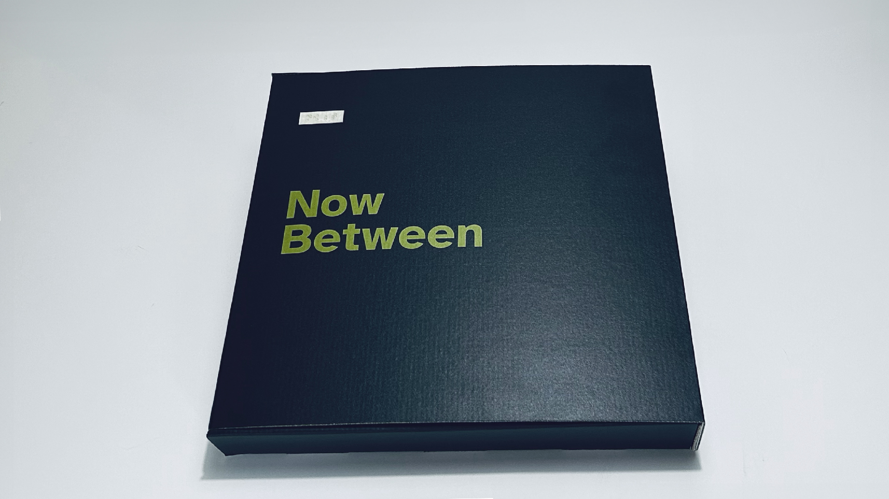
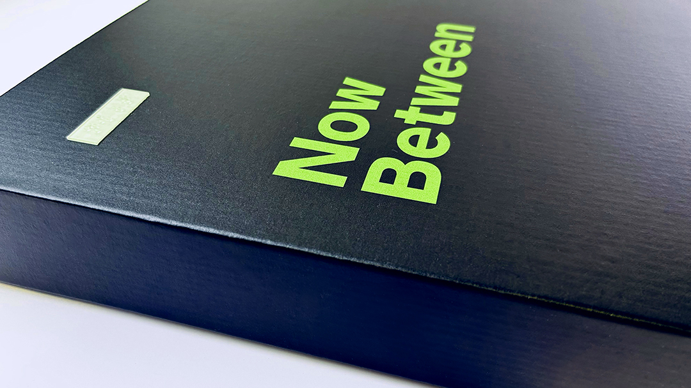
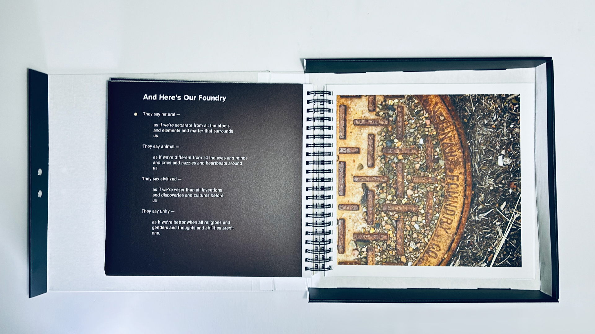
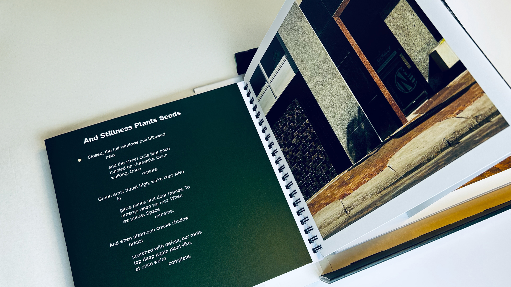
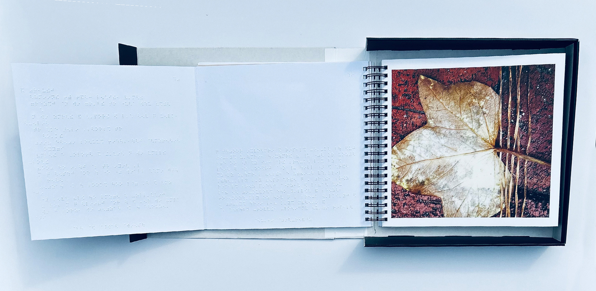
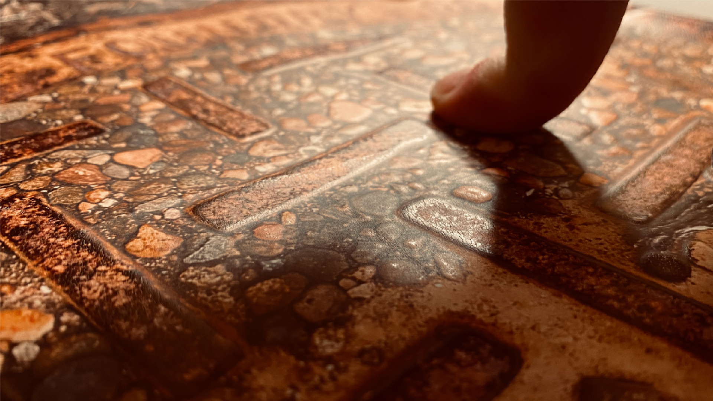
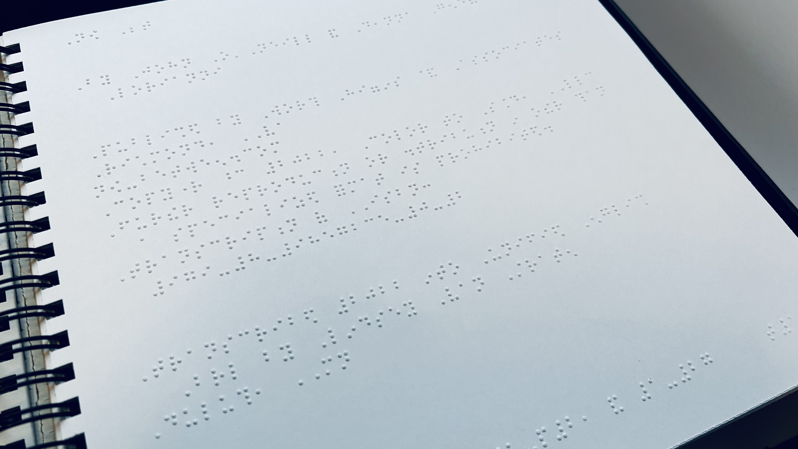
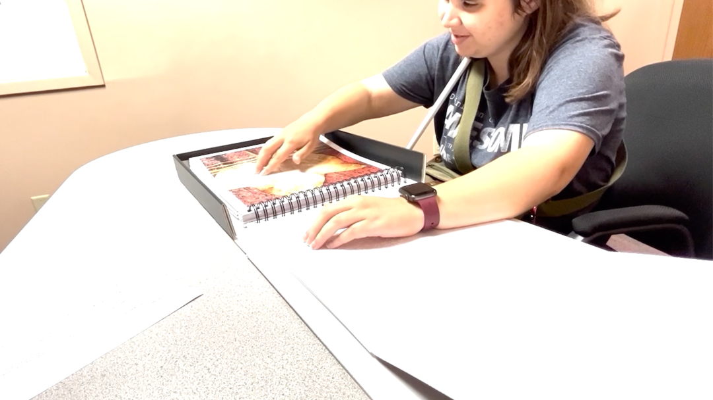

Abstract
Disability scholar Rosemarie Garland-Thomson describes this idealized figure as the "normate," a socially constructed concept that establishes expectations for what people's bodies should be able to do. Graphic design frequently reflects these same expectations by assuming that users can perceive, interpret, and interact with communication in particular ways. The graphic design we engage with each day is often inaccessible, whether because typography is difficult to read, color contrast is insufficient, or packaging is difficult to open, to name a few examples. These examples show that, whether intentionally or unintentionally, there are assumptions that people's bodies enable them to use design solutions as intended. The graphic design profession needs new workflows that identify gaps created by normate assumptions as part of the design process. The development of Now / Between, a multimodal artist book that combines typography, photography, poetry, Braille, and tactile design, demonstrates how accessible graphic design challenges normate assumptions by expanding how communication is conceived, designed, and experienced. The book supports multiple pathways for engagement by sighted, low-vision, and blind readers without requiring separate editions or adaptations. While designed to support blind and low-vision readers, it also invites sighted readers to engage with photography through both visual and tactile means. The project demonstrates how accessibility can generate new forms of aesthetic, material, and sensory engagement rather than simply removing barriers. It illustrates how the same attention, care, and commitment to accessibility can inform the broader range of graphic design artifacts that shape everyday experiences.
Keywords
Graphic Design and the Normate
The Union of the Physically Impaired Against Segregation (UPIAS) argued that people with impairments are disabled by social conditions and barriers. For blind and low-vision people, these barriers can limit how they experience visual and literary arts. Mike Oliver later named and developed this understanding as the Social Model of Disability, which shifts attention from an individual’s impairment to the mismatch between people and the conditions created by society. Deanna Geneva Lorianni and I collaborated to produce Now / Between to help close this accessibility gap by creating multiple ways to experience photography and poetry.
Bodily impairments shape individual lived experiences (Crow, 1996), while disability is produced through spatial, societal, structural, and communicative barriers that constrain full participation (UPIAS and Disability Alliance, 1976; Oliver, 1996). This understanding of disability provides a means of examining what Kat Holmes describes as a mismatch between a person and an exclusionary design (Holmes, 2018). Bess Williamson and Elizabeth Guffey further examine how disability emerges not only from the characteristics of our bodies but also from breakdowns in the systems through which people access information, participate in society, and engage with the world around them (Williamson and Guffey, 2020). This dynamic serves as the foundation for how this paper frames design’s role as both a contributor to systemic barriers and a means of reducing or eliminating them.
System breakdowns will be examined through what Bess Williamson and Elizabeth Guffey describe as the Design Model of Disability. In Making Disability Modern: Design Histories, Williamson and Guffey introduce the Design Model of Disability as a framework for understanding disability as a phenomenon that can be addressed or ameliorated through material and digital artifacts (Williamson and Guffey, 2020). They argue that design defines categories of ability and disability in ways distinct from medical and social frameworks. This perspective shifts attention away from disability as solely a characteristic of an individual body and toward the role that designed environments, objects, systems, and forms of communication play in shaping human experience (Williamson and Guffey, 2020).
This perspective has become increasingly important as graphic design extends beyond the creation of individual artifacts toward the development of systems, services, environments, and experiences. Through typography, imagery, color, materiality, interaction, and sensory engagement, designers increasingly shape how users move through interconnected touchpoints rather than engaging with a single object in isolation. A brand system, for example, may be experienced across advertisements, websites, packaging, retail environments, social media platforms, exhibitions, and customer service interactions. These design decisions do not merely respond to differences in ability. They also establish expectations about how communication should be perceived and experienced. In doing so, graphic design helps define what forms of perception, interaction, and participation are treated as normative. As Garland-Thomson suggests, these assumptions contribute to the construction of the normate by establishing expectations for how communication should be perceived and experienced.
Accessibility as Creative Practice
The Design Model of Disability provides a framework that all designers can use, offering a new lens and practical steps to avoid treating accessibility as a fixed set of solutions. By shifting attention from individual impairments to the design decisions that shape access, the framework encourages designers to reconsider how communication is conceived, produced, and experienced. Experimentation with materials, processes, and technologies, combined with co-design and user testing, can help designers move beyond standardized assumptions and develop more responsive approaches to accessibility. Accessibility, in this sense, becomes a creative practice that expands how communication can be designed and experienced.
Disability-related challenges have often been approached through technical, medical, or engineering perspectives rather than through design disciplines. While these approaches are essential, they can position accessibility primarily as a problem to be solved. Designers, however, are trained to work through exploration.
Instead of treating accessibility solely as a problem to be solved, designers can approach it as an opportunity to investigate new materials, sensory experiences, forms of interaction, and modes of communication. This goes beyond incorporating alt text, applying color contrast requirements, or using semantic HTML, to name only a few examples. These practices should be implemented, but they represent the floor of accessibility rather than its ceiling. Exploring materials, processes, and technologies in ways not originally intended can expand the possibilities for accessible graphic design.
The Development of Now / Between
The project put the Design Model of Disability into practice by challenging normate assumptions about who books are designed to serve. By engaging low-vision and blind communities in art forms from which they are often excluded, the project sought to create multiple pathways through the same artifact rather than separate experiences for different audiences.
We designed from the inside out, identifying what was needed to make the book accessible for blind and low-vision readers while integrating those same elements into the experience for all readers. While Braille is not typically read by sighted audiences, it becomes part of the book's visual and material language. Likewise, tactile elements incorporated into the photographs provide additional ways to engage with the images while remaining accessible to readers who experience them visually.
To maximize impact, we sought scalable materials and production methods to support an affordable, mass-produced edition. Rather than treating accessibility as an afterthought, the project used it as a framework for exploring new materials, production methods, and forms of artistic engagement.
Project Origins
The start of Now / Between coincided with a parallel shift in our individual and joint creative practices between my coauthor, Deanna Lorianni, and me. While my primary focus had long been socially conscious graphic design, street photography remained a separate creative outlet with little overlap between the two. Similarly, Lorianni's work in communication strategy, plain language, and copywriting existed alongside her poetry and creative writing. As these previously separate areas of our work began to converge, we both found ourselves asking who had been excluded from experiencing what we had created in the past. Now / Between emerged from those questions as we committed to making accessibility a core component of both our individual and collaborative work. We started this journey by deciding to develop an art book showcasing the work we do outside our primary roles, recognizing that people with low vision and blindness are often excluded from experiencing photographic art and contemporary poetry.
We chose to create a book because we wanted the work to live beyond a gallery exhibition. Knowing that exhibitions are temporary, we would have the opportunity to reach a broader audience with a book. It would also give us the means to explore how accessibility could be applied to a traditional graphic design medium, showing that graphic design can be executed with accessibility in mind. We were also interested in designing and developing a book because disability advocates have long described the shortage of published works available in accessible formats as a “book famine” (Jewell, 2014). According to the World Blind Union, less than 10% of published materials worldwide are available in formats that can be read by people with low vision, blindness, or print disabilities (Jewell, 2014). We examined the lack of accessible books as a systemic failure and knew that our book could serve as an example of how books can be designed to challenge normative assumptions about how readers engage with published works.


Book Structure, Braille, and Typography
The book's structure was systematically designed to support multiple pathways for engaging with the content. Each photograph and its associated poem are organized as a spread, with the poem typeset on the left page and the full-color tactile photograph on the right. The left page unfolds to reveal two additional panels. The far-left panel contains the poem in Braille, while the center panel contains a Braille image description of the photograph. This structure allows readers to move between visual, textual, and tactile forms of communication while remaining within the same artifact. The foldout design integrates Braille, typography, image descriptions, poetry, and photography into a unified reading experience. Accessible content is not separated from the primary experience but embedded within it.



Photography, Poetry, and Tactile Imagery

The selection of images to be showcased in the book was guided by the project's central theme of "between." From my portfolio of more than 1,600 abstract and street photographs produced over two decades, we narrowed the work to ten final images. The selected photographs capture objects and rural and urban environments in states of transition and change due to weather exposure and human use. Lorianni wrote a poem in response to each photograph. The poems are not image descriptions intended to explain what appears in the photographs. Instead, they establish mood and emotion, creating space for readers to develop their own interpretations of the images. The photographs and poems complement one another, with each contributing something the other cannot.
The street and abstract photographs already contained visual structures that could be experienced through both sight and touch. Rather than replacing one mode of perception with another, the project explored how visual and tactile experiences might coexist within the same image.
To bring the textural elements into tactile form, each photograph was printed in full color while also incorporating tactile layers produced through multiple heights of clear varnish. This method gave each photograph two modes of communication: seeing the image in full color and experiencing it through touch. Finding an effective method was challenging because, unlike an illustration or infographic, a photograph cannot easily be simplified without losing important visual information.
In his 2016 TEDxStockholm talk, photographer Truls Nord reminded me that tactile images often communicate only the descriptive parts of an image (Nord, 2016). His point reinforced that light, shadow, and depth are photographic elements that need to remain present. Without those elements, the printed image may not provide enough detail, whether it is experienced visually or through touch.
Print Methods and Processes
Through the research, we developed a partnership with Worth Higgins & Associates, a commercial printer located in Richmond, Virginia. The company possesses a wide range of capabilities, including offset printing, large-format production, and signage fabrication. Rather than using its commercial printing capabilities in conventional ways, Worth Higgins & Associates combined technologies from multiple areas of its business to create a workflow that could produce the book. A printing system typically used for wallpaper, environmental graphics, and other large-format applications was adapted to print the tactile photographs, which were then mounted to board. Braille was printed on Braille paper and mounted to the reverse side of the same board, after which the components were collated and bound together.
The completion of the first edition took more than four years due to the comprehensive research conducted for the project, from identifying the best materials and production methods to ensuring the book could be produced at an affordable cost. The processes commonly used to mass-produce books and printed materials rarely accommodate tactile communication, Braille, or multimodal engagement. Achieving these forms of accessibility often requires additional labor, specialized equipment, and substantial modifications to existing workflows. This revealed that the barriers to accessibility extend beyond design decisions and into the production systems that support graphic design. In this sense, accessibility is not only limited by design decisions but also by the infrastructures through which graphic design is produced and distributed.

The final photographs were produced using multiple layers of clear varnish because this method provided the strongest contrast in tactile height while preserving the visual qualities of the original images. Although the varnish created a consistent tactile surface rather than a wide range of textures, it represented a practical balance between production cost, durability, and tactile quality.
Consultants and User Testing
The Lighthouse Center for Vital Living (LCVL) is a Duluth, Minnesota, organization that provides Adjustment to Blindness Training, occupational therapy, independent-living support, and technology services to older adults and people with disabilities across Minnesota’s Arrowhead region and northwestern Wisconsin. LCVL representatives, some of whom have low vision, served as consultants from the project’s outset. They met virtually with Deanna Lorianni, me, and Worth Higgins & Associates, sharing lived perspectives and expertise in Braille, tactile graphics, and assistive technology. Their collaboration helped shape the book as a multimodal experience. Before the photographs were assembled into book form, the consultants evaluated successive test prints to determine whether the varnish created sufficient tactile distinction among photographic elements. Each collaborator examined the same prints and compared observations about their tactile clarity.

Implications for Graphic Design
With the first edition complete, the project raised important questions about how Deanna and I want to continue examining systemic accessibility failures where normate assumptions remain present. We concluded accessible graphic design need not be treated as a specialized area within the discipline but as an approach to practice that places greater emphasis on user-centered communication and provides multiple pathways for engaging with information and experiences.
Achieving these outcomes requires more than treating accessibility as a checklist or compliance requirement. Developing a disability-centered workflow begins with recognizing the normative assumptions that have historically shaped design decisions. The Design Model of Disability provides one framework for understanding how conceptual, design, and production decisions influence participation, access, and communication. Through this lens, accessibility becomes an integral part of the design process rather than an addition made after a solution has already been developed.
The project also revealed how concepts such as tactile hierarchy and sensory redundancy can function within graphic design practice. These concepts enhance accessibility for low-vision and blind audiences and can also create tactile visual aesthetics and multiple sensory channels for communicating information. This tactile visual aesthetic conveys meaning to audiences with a wide range of visual abilities. Tactile elements can serve primary communicative functions, while others contribute texture, orientation, or emphasis, establishing a hierarchy of tactile information similar to the visual hierarchies commonly used in graphic design.
Conclusion
Conclusion
Graphic design has long been shaped by assumptions about how people read, see, navigate, and engage with information. As Garland-Thomson's (1997) concept of the normate suggests, these assumptions reflect a limited understanding of the human experience of living with a disability. The Design Model of Disability challenges designers to recognize that communication systems, artifacts, and environments shape which human experiences are upheld as the status quo (Williamson and Guffey, 2020). Rather than viewing accessibility as a matter of meeting compliance, accessibility becomes a framework for questioning these assumptions and expanding how communication is conceived and experienced.
The project also remains ongoing. The lessons learned through the first edition have informed the development of a second edition that seeks to further improve the relationship between typography and Braille. The second edition will expand the diversity of tactile experiences within the photographs and refine the overall book structure. These improvements are being explored while maintaining a focus on scalable materials, production methods, and affordability. The long-term goal is a larger press run to reach a broader audience, an outcome that would not have been possible without the experimentation, user testing, successes, and limitations encountered during the first edition.
The project changed how Deanna Lorianni and I think about our creative practice. What began as an effort to create a more accessible art experience became an ongoing exploration of how accessibility can inform design, writing, and artistic expression.
References
Crow, L. (1996) ‘Including all of our lives: Renewing the social model of disability’, in Morris, J. (ed.) Encounters with Strangers: Feminism and Disability. London: Women’s Press.
Garland-Thomson, R. (1997) Extraordinary Bodies: Figuring Physical Disability in American Culture and Literature. New York: Columbia University Press.
Holmes, K. (2018) Mismatch: How Inclusion Shapes Design. Cambridge, MA: MIT Press.
Jewell, C. (2014) ‘Accessible Books Consortium: Breaking Down Barriers to Accessibility’, WIPO Magazine, June. Available at: https://www.wipo.int/wipo_magazine/en/2014/03/article_0006.html (Accessed: 29 June 2026).
Nord, T. (2016) ‘Tactile photographs that display worlds of light, shadow and mood’, TEDxStockholm, November. Available at: https://www.ted.com/talks/truls_nord_tactile_photographs_that_display_worlds_of_light_shadow_and_mood (Accessed: 17 September 2026).
Nord, T. (n.d.) ‘Selected works’. Available at: https://truls.se/ (Accessed: 17 September 2026).
Oliver, M. (1996) Understanding Disability: From Theory to Practice. Basingstoke: Macmillan.
O'Neill, J. (2021) ‘Accessibility for All Abilities: How Universal Design, Universal Design for Learning, and Inclusive Design Combat Inaccessibility and Ableism’, Journal of Open Access to Law, 9(1). Available at: https://ojs.imodev.org/JOAL/article/view/424 (Accessed: 29 June 2026).
UPIAS and Disability Alliance (1976) Fundamental Principles of Disability: Being a Summary of the Discussion Held on 22nd November, 1975 and Containing Commentaries from Each Organisation. London: UPIAS and Disability Alliance. Available at: https://disabledpeoplesarchive.com/ (Accessed: 17 September 2026).
Williamson, B. and Guffey, E. (eds) (2020) Making Disability Modern: Design Histories. London: Bloomsbury Visual Arts.
Author Bio
John O’Neill is an educator and designer at the University of Minnesota Duluth, whose teaching, research, and creative practice explore accessibility through multimodal communication and disability-informed approaches to design. As an Associate Professor, he develops an evolving pedagogy that positions accessibility as a fundamental design skill rather than a specialized area of practice.
Recommended Citation
O’Neill, J. (2026) ‘A Multimodal Artist Book That Challenges Normate Assumptions About Experiencing Art’, Everyday Life: International Journal of Public Culture, Art and Design, 1(1), pp. 1–16.
Article URL: https://articles.everydaylifejournal.uk/articles/practice-reviews/a-multimodal-artist-book/
Copyright
© 2026 The Author(s). Published by Everyday Life: International Journal of Public Culture, Art and Design. This is an open-access article distributed under the terms of the Creative Commons Attribution-NonCommercial 4.0 International Licence (CC BY-NC 4.0), which permits non-commercial use, distribution and reproduction in any medium, provided the original work is properly cited. Everyday Life is an independent open-access journal with no submission or publication fees.